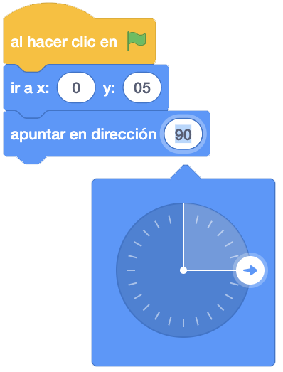
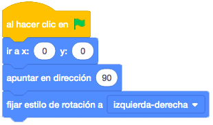

Será nuestro personaje, y se moverá por la pantalla para iniciarnos en el movimiento de los objetos.
Usaremos el fondo Xy-grid para tener presente las coordenadas del escenario. Una vez finalizado el juego, le dejaremos que elija cualquier otro escenario para poner de fondo en su juego.
El juego consiste en movernos por la pantalla para conocer cómo hacerlo y los límites de la misma.
El gato debe comenzar siempre desde el centro de la pantalla (Posiciones "X = 0" e "Y = 0".
Entre movimiento y movimiento el gato, tenemos que cambiar de disfraz para hacer el movimiento más fluido.
También tenemos que hacer que espere para que el movimiento no sea demasiado rápido.
Utilizar los bucles para no repetir tantas veces lo mismo.
El gato debe moverse desde el centro hasta la parte final de la derecha, después se moverá a la izquierda, a
continuación se dirigirá al centro de la pantalla para después subir hacia arriba y posteriormente bajar a la
parte de abajo. Por último, volverá al centro. Cuando realicemos estos movimientos, tenemos que llegar hasta
cada limite mencionado sin que el gato llegue a salirse de la pantalla.
Primero pondremos al gato en el centro de la pantalla (x=0 e y=0), apuntando hacia la derecha.

Moveremos pasos hasta que llegue al borde de la derecha, pero sin pasarse.
En los pasos poner siempre valores múltiplos de 10 porque luego es más fácil y más visual cuando más adelante implementemos el bucle "Repetir".
Después apuntaremos a la izquierda para llegar al borde de la parte izquierda.
El gato se pondrá boca abajo ya que estamos cambiando su orientación. Para evitar esto y que sólo se dé la vuelta, tendríamos que cambiar el estilo de rotación a "Izquierda/Derecha".

Haremos que se mueva hacia la izquierda hasta llegar al borde y volveremos apuntar a la derecha para volver a
la posición inicial (x=0 e y=0).
Si lo ejecutamos parece que no hace todo lo que le hemos puesto y eso es porque nuestros ojos son más lentos
que el ordenador. Para ver lo que realmente está haciendo el gato, pondremos un bloque "esperar 1 segundo"
después de cada movimiento.

Una vez que esté de nuevo en el centro, haremos que apunte hacia arriba y que se mueva sin pasarse del borde
superior. A continuación, apuntaremos hacia abajo y volveremos a mover pasos hasta la parte inferior, también
sin pasarse del borde.
Por último, volveremos a apuntar hacia arriba y movemos pasos hasta llegar de nuevo al centro de la pantalla
(x=0 e y=0).
Quedaría más o menos de la siguiente forma.

Nos faltaría que el gato en lugar de desplazarse de un lado a otro de la pantalla, se moviera como si fuera
andando.
Sustituiremos el movimiento de los pasos de un lado a otro por un bucle donde le moveremos de 10 en 10 pasos
el número de veces que sea necesario y reduciremos el tiempo de espera para que sea más rápido.

Para que el movimiento del gato sea más real, añadimos que cambie de disfraz cada vez que se mueva y que
antes de cada cambio de dirección reproduzca el sonido "Miau" que tiene asociado el gato.
Con todos los cambios, quedará de la siguiente manera.

Y el juego quedaría así.
Para ver el juego terminado pulsa
aquí.
Para descargarte el juego terminado pulsa
aquí.